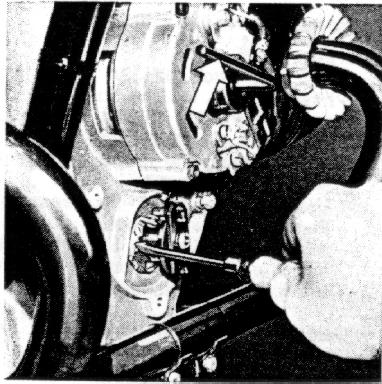
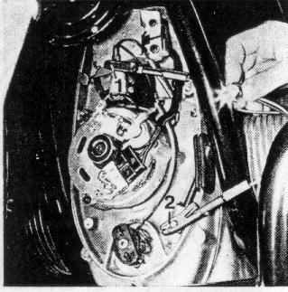
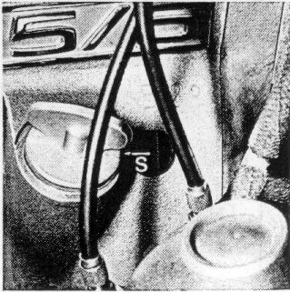
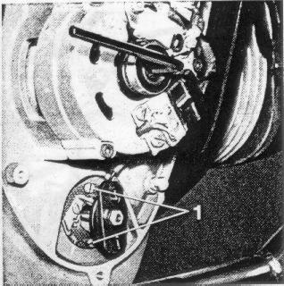

Check the breaker contact gap
every 3000 miles:
First remove battary cable,
then remove the generator cover
by removing the three allen-head screws (wrench size 5).
If no dwell angle meter is available, proceed as follows:
Remove spark plugs,
insert 6 mm allen wrench into the alternator rotor bolt
and turn engine clockwise in direction of rotation
until breaker lever lifts off fully.
If necessary, contacts can be cleaned with a contact file;
however the best practice is to replace them.
Check contact gap with feeler gage 0.014 to 0.016".
To adjust the breaker contact gap:
loosen set screw slightly,
position screw driver between the two little pins
and into the slot of the breaker anvil and set to 0.014 to 0.016".
Tighten set screw 1 and recheck contact gap.
Figure 45
45

Rub a small amount of Bosch grease Ft 1 v 4
into the lubrication felt
every 6000 miles and check whether the felt rests properly on the cam.
Remove the centrifugal advance unit every 6000 miles.
To do this, first remove the hex nut (wrench size 10).
After you withdraw the advance unit lubricate the shaft
with Bosch grease Ft 1 v 22 or 26.
Watch for proper spring action.
Check ignition
every 3000 miles or after each readjustment of the breaker contact gap.
(a) Connect one terminal of test lamp to condenser 1, the other
to ground 2, with ignition switched on.
Figure 46
46

Test lamp must light up when the "S" marking at the flywheel coincides
with the window marking as the engine is turned clockwise
(direction of engine rotation) -- (fly weights at rest).
Figure 47
47

The ignition timing may fluctuate between the left and the right
cylinder a maximum of 2o (which corresponds to 0.1" of
the flywheel diameter).
(b) Put timing light between spark plug cap and spark plug and
direct light against the flywheel periphery in the window with
the engine running.
At idling speed of the engine (600 to 800 RPM),
the flywheel marking "S" (late spark) must appear in the window
as a bright line; if the bright line is above center,
the spark is too far advanced,
if below center, the spark is too far retarded.
By increasing the engine RPM the "S" mark will disappear
toward the top (movement starts approx. at 800 RPM)
until the flywheel marking "F" (advanced timing) appears in
the window from below at 3000 RPM (full advance).
Adjust timing:
Loosen the two slotted screws 1 in the breaker base plate.
Turning the base plate in the direction of rotation
retards the timing;
turning it against the direction of rotation advances the timing
(direction of rotation of crank-shaft and cam-shaft is the same).
After completion of adjustment retighten the two screws.
Figure 48
48

When checking the ignition timing with a test lamp, turn the engine approximately 45o against the direction of rotation before test (test lamp goes out). This will eliminate any possible lost motion. Recheck timing with timing light. If the timing is incorrect, check trueness of shaft (max. 0.0008") and ease of travel of the cam of the centrifugal advance unit on the shaft.